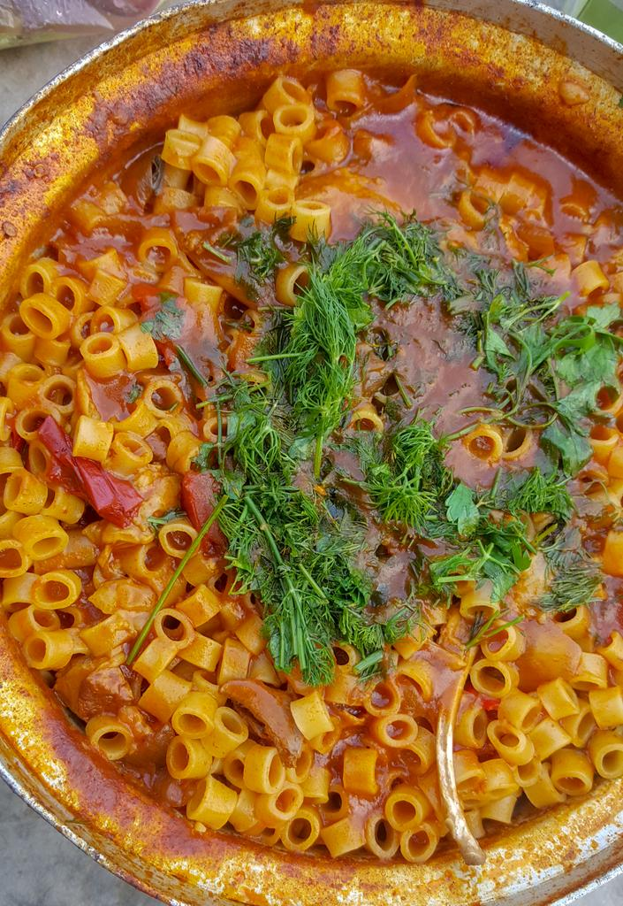

imbakbaka

Description
Unless you are very familiar with Egyptian or Libyan cuisine
, you may not have heard of Mbakbaka before.
But don’t be intimidated by the unfamiliar name! It is absolutely delicious.
Sometimes also called Imbakbaka
, Mbakbaka is common
in Egyptian and Libyan
cultures. It is naturally
a one-pot pasta dish , and is quite
similar to the
concept of an Italian Minestrone.
Ingredients
- 5 cups of chicken or vegetable broth
- 5 cups water
- 1 teaspoon garlic powder
- 1 teaspoon onion powder
- 1 teaspoon paprika
- 1 teaspoon coriander powder
- 2 teaspoons salt unless using regular
sodium broth should be 1 tsp
- 3 Tablespoons olive oil
- 4 Tablespoons tomato sauce
- 16 ounces Ditalini pasta
- 3 chili peppers
- 1 Tablespoon sugar
Steps
- Heat up the stock and water together in a large pot on the stove over medium heat
- the garlic powder, onion powder, paprika, coriander, salt and olive oil to the pot and mix it all together
- Follow by stirring in the tomato sauce
- 5 cups of chicken or vegetable broth,2 cups water,1 teaspoon garlic powder,1 teaspoon onion powder,1 teaspoon paprika,1 teaspoon coriander powder,2 teaspoons salt,3 Tablespoons olive oil,4 Tablespoons tomato sauce
Bring the seasoned liquid up to a boil
- in the pasta, chiles, and sugar. Give it another quick mix.
- ounces Ditalini pasta,3 chili peppers,1 Tablespoon sugar
- Allow the pasta to boil on high for about 15 minutes. You want your pasta to cook to al dente!
- pasta until the liquid is absorbed. Serve hot!
other recipes